Let \(f(t)\) be a continuous function defined on \([a,b]\text{.}\) The definite integral \(\int_a^b f(x)\, dx\) is the “area under \(f\)” on \([a,b]\text{.}\) We can turn this concept into a function by letting the upper (or lower) bound vary.
Let \(F(x) = \int_a^x f(t)\, dt\text{.}\) It computes the area under \(f\) on \([a,x]\) as illustrated in Figure 5.4.1. We can study this function using our knowledge of the definite integral. For instance, \(F(a)=0\) since \(\int_a^af(t)\, dt=0\text{.}\)
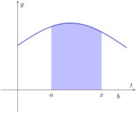
Figure5.4.1.The area of the shaded region is \(F(x) = \int_a^x f(t)\, dt\)
Example5.4.2.Exploring the “Area so far” function.
Consider \(f(t)=2t\) pictured in Figure Figure 5.4.3 and its associated “area so far” function, \(F(x)=\int_1^x 2t\, dt\text{.}\) Using the graph of \(f\) and geometry, find an explicit formula for \(F\text{.}\)
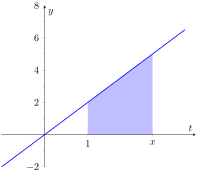
Figure5.4.3.The area of the shaded region is \(F(x) = \int_1^x 2t\, dt\)
We can see from Figure 5.4.4 that for \(x \geq 1\text{,}\) the area under the curve can be found by subtracting the area of two triangles. The larger triangle will have a base of \(x\) and a height of \(f(x)=2x\text{,}\) while the smaller triangle will have a base of \(1\) and a height of \(2\text{.}\) Therefore, the area under the curve for \(x \geq 1\) is given by \(A(x)=\frac12 (x)(2x)-\frac12 (1)(2)=x^2-1\text{.}\)
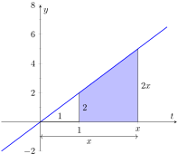
Figure5.4.4.The area of the shaded region is \(F(x) = \int_1^x 2t\, dt\)
Note that this same formula holds for \(x\lt 1\text{.}\) If \(x \lt 1\text{,}\) then \(F(x) = \int_1^x 2t\, dt=-\int_x^1 2t\, dt\text{.}\) The areas to the left of \(x=1\) will have opposite signs (since they areas are accumulated before\(x=1\)). For example, when \(x=0\text{,}\)\(F(0) = -\int_0^1 2t\, dt=-\frac12 (1)(2)=-1\text{.}\) This is the same value we get from evaluating \(x^2-1\) for \(x=0\text{.}\) Also notice that \(F(-1)=\int_1^{-1} 2t \, dt=-\int_{-1}^1 2t\, dt\text{.}\) This integral is clearly \(0\) since the areas over \([-1,0]\) and \([0,1]\) will sum to zero. Again, this is the same answer obtained by evaluating \(x^2-1\) for \(x=-1\text{.}\)
Therefore, we can reasonably say that \(F(x)=x^2-1\text{.}\) A plot of both \(f(x)=2x\) and \(F(x)=x^2-1\) are given in Figure Figure 5.4.5. You should notice a familiar relationship between these two functions. This relationship is formally stated in Theorem 5.4.6.
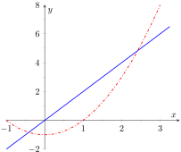
Figure5.4.5.Graphs of \(f(x)=2x\) and \(F(x)=x^2-1\)
Subsection5.4.1Fundamental Theorem of Calculus, Parts 1 and 2
As Example 5.4.2 hinted, we can apply calculus ideas to \(F(x)\text{;}\) in particular, we can compute its derivative. In Example 5.4.2, \(F(x)=x^2-1\text{,}\) so \(F'(x)=2x=f(x)\text{.}\) While this may seem like an innocuous thing to do, it has far-reaching implications, as demonstrated by the fact that the result is given as an important theorem.
Theorem5.4.6.The Fundamental Theorem of Calculus, Part 1.
Let \(f\) be continuous on \([a,b]\) and let \(F(x) = \int_a^x f(t)\, dt\text{.}\) Then \(F\) is a differentiable function on \((a,b)\text{,}\) and
Using the Fundamental Theorem of Calculus, we have \(\Fp(x) = x^2+\sin(x)\text{.}\) That is, the derivative of the “area so far” function, is simply the integrand replacing \(x\) with \(t\text{.}\)
This simple example reveals something incredible: \(F(x)\) is an antiderivative of \(x^2+\sin(x)\text{!}\) Therefore, \(F(x) = \frac13x^3-\cos(x) +C\) for some value of \(C\text{.}\) (We can find \(C\text{,}\) but generally we do not care. We know that \(F(-5)=0\text{,}\) which allows us to compute \(C\text{.}\) In this case, \(C=\cos(-5)+\frac{125}3\text{.}\))
What we have done in Example 5.4.7 was more than finding a complicated way of computing an antiderivative. Consider a function \(f\) defined on an open interval containing \(a\text{,}\)\(b\) and \(c\text{.}\) Suppose we want to compute \(\int_a^b f(t)\, dt\text{.}\) First, let
Using Equation (5.4.1), let \(x=a\) in the first integral and \(x=b\) in the second integral so that \(\int_c^a f(t)\, dt =F(a)\) and \(\int_c^b f(t)\, dt =F(b)\text{.}\) Therefore:
We now see how indefinite integrals and definite integrals are related: we can evaluate a definite integral using antiderivatives! In fact, this is exactly what we noticed in Example 5.4.2. The “area so far” function was indeed an anti-derivative of the integrand. This is the second part of the Fundamental Theorem of Calculus.
Theorem5.4.8.Fundamental Theorem of Calculus, Part 2.
Let \(f\) be continuous on \([a,b]\) and let \(F\) be any antiderivative of \(f\text{.}\) Then
Example5.4.9.Using the Fundamental Theorem of Calculus, Part 2.
We spent a great deal of time in the previous section studying \(\int_0^4(4x-x^2)\, dx\text{.}\) Using the Fundamental Theorem of Calculus, evaluate this definite integral.
We need an antiderivative of \(f(x)=4x-x^2\text{.}\) All antiderivatives of \(f\) have the form \(F(x) = 2x^2-\frac13x^3+C\text{;}\) for simplicity, choose \(C=0\text{.}\)
This is the same answer we obtained using limits in the previous section, just with much less work.
Notation: A special notation is often used in the process of evaluating definite integrals using the Fundamental Theorem of Calculus. Instead of explicitly writing \(F(b)-F(a)\text{,}\) the notation \(F(x)\Big|_a^b\) is used. Thus the solution to Example 5.4.9 would be written as:
The Constant \(C\text{:}\)Any antiderivative \(F(x)\) can be chosen when using the Fundamental Theorem of Calculus to evaluate a definite integral, meaning any value of \(C\) can be picked. The constant always cancels out of the expression when evaluating \(F(b)-F(a)\text{,}\) so it does not matter what value is picked. This being the case, we might as well let \(C=0\text{.}\)
Example5.4.10.Using the Fundamental Theorem of Calculus, Part 2.
This integral is interesting; the integrand is a constant function, hence we are finding the area of a rectangle with width \((5-1)=4\) and height 2. Notice how the evaluation of the definite integral led to \(2(4)=8\text{.}\) In general, if \(c\) is a constant, then \(\int_a^b c\, dx = c(b-a)\text{.}\)
Subsection5.4.2Understanding Motion with the Fundamental Theorem of Calculus
We established, starting with Key Idea 2.2.3, that the derivative of a position function is a velocity function, and the derivative of a velocity function is an acceleration function. Now consider definite integrals of velocity and acceleration functions. Specifically, if \(v(t)\) is a velocity function, what does \(\ds \int_a^b v(t)\, dt\) mean?
where \(V(t)\) is any antiderivative of \(v(t)\text{.}\) Since \(v(t)\) is a velocity function, \(V(t)\) must be a position function, and \(V(b) - V(a)\) measures a change in position, or displacement.
Example5.4.11.Finding displacement and distance.
A ball is thrown straight up with velocity given by \(v(t) = -32t+20\)ft/s, where \(t\) is measured in seconds. Find, and interpret, \(\int_0^1 v(t)\, dt\) and \(\int_0^1 \abs{v(t)}\, dt\text{.}\)
Thus if a ball is thrown straight up into the air with velocity \(v(t) = -32t+20\text{,}\) the height of the ball, 1 second later, will be 4 feet above the initial height.
Note that the ball has traveled much farther. It has gone up to its peak and is falling down, but the difference between its height at \(t=0\) and \(t=1\) is 4ft.
If we wish to find the total distance traveled, we must evaluate \(\int_0^1 \abs{v(t)}\, dt\) (noting that negative velocities will reduce the diplacement, but we want distance, not displacement). In this case, we know that the velocity changes sign once when \(v(t)=0\text{,}\)so \(t=20/32=5/8\) seconds. The velocity is positive over \([0,5/8]\) and negative over \([5/8,1]\text{.}\) Therefore
So the total distance traveled over \([0,1]\) is \(\int_0^1 \abs{-32t+20}\, dt=9 \text{ feet }\text{.}\)
As we can see in Figure 5.4.12, the positive area between \(v(t)\) and the \(t\)-axis, \(A_1=25/4\text{,}\) while the negative area, \(A_2=-9/4\text{.}\) When we add these two areas, we get the displacement of \(4\) ft. But when we add the absolute value of both of these areas (as in Figure 5.4.13), we get the total distance of \(9\) ft.
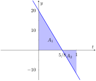Figure5.4.12.The area between \(v(t)\) and the \(t\)-axis can be used to represent displacement
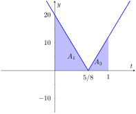Figure5.4.13.The area between \(\abs{v(t)}\) and the \(t\)-axis can be used to represent distance
Integrating a rate of change function gives total change. Velocity is the rate of position change; integrating velocity gives the total change of position, i.e., displacement.
Integrating a speed function gives a similar, though different, result. Speed is also the rate of position change, but does not account for direction. That is, the speed an object is the absolute value of its velocity. This is what we saw in Example 5.4.11 when we evaluated \(\int_0^1 \abs{v(t)}\, dt\text{.}\) So integrating a speed function gives total change of position, without the possibility of “negative position change.” Hence the integral of a speed function gives distance traveled.
As acceleration is the rate of velocity change, integrating an acceleration function gives total change in velocity. We do not have a simple term for this analogous to displacement. If \(a(t) = 5\)miles/h\(^2\) and \(t\) is measured in hours, then
While we have just practiced evaluating definite integrals, sometimes finding antiderivatives is impossible and we need to rely on other techniques to approximate the value of a definite integral. Functions written as \(F(x) = \int_a^x f(t)\, dt\) are useful in such situations.
It may be of further use to compose such a function with another. As an example, we may compose \(F(x)\) with \(g(x)\) to get
We can view \(F(x)\) as being the function \(G(x) = \int_2^x \ln(t) \, dt\) composed with \(g(x) = x^2\text{;}\) that is, \(F(x) = G\big(g(x)\big)\text{.}\) The Fundamental Theorem of Calculus states that \(G'(x) = \ln(x)\text{.}\) The Chain Rule gives us
Consider continuous functions \(f(x)\) and \(g(x)\) defined on \([a,b]\text{,}\) where \(f(x) \geq g(x)\) for all \(x\) in \([a,b]\text{,}\) as demonstrated in Figure 5.4.16. What is the area of the shaded region bounded by the two curves over \([a,b]\text{?}\)
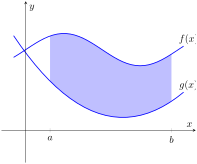(a)
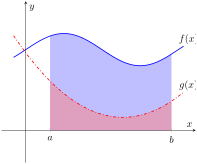(b)
Figure5.4.16.Finding the area bounded by two functions on an interval by subtracting the area under \(g\) from the area under \(f\)
The area can be found by recognizing that this area is “the area under \(f\)\(-\) the area under \(g\text{.}\)” Using mathematical notation, the area is
Let \(f(x)\) and \(g(x)\) be continuous functions defined on \([a,b]\) where \(f(x)\geq g(x)\) for all \(x\) in \([a,b]\text{.}\) The area of the region bounded by the curves \(y=f(x)\text{,}\)\(y=g(x)\) and the lines \(x=a\) and \(x=b\) is
It will help to sketch these two functions, as done in Figure 5.4.19.
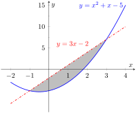
Figure5.4.19.Sketching the region enclosed by \(y=x^2+x-5\) and \(y=3x-2\) in Example 5.4.18
The region whose area we seek is completely bounded by these two functions; they seem to intersect at \(x=-1\) and \(x=3\text{.}\) To check, set \(x^2+x-5=3x-2\) and solve for \(x\text{:}\)
Subsection5.4.5The Mean Value Theorem and Average Value
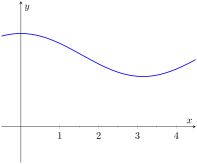
Figure5.4.20.A graph of a function \(f\) to introduce the Mean Value Theorem
Consider the graph of a function \(f\) in Figure 5.4.20 and the area defined by \(\int_1^4 f(x)\, dx\text{.}\) Three rectangles are drawn in Figure 5.4.21; in Figure 5.4.21.(a), the height of the rectangle is greater than \(f\) on \([1,4]\text{,}\) hence the area of this rectangle is is greater than \(\int_0^4 f(x)\, dx\text{.}\)
In Figure 5.4.21.(b), the height of the rectangle is smaller than \(f\) on \([1,4]\text{,}\) hence the area of this rectangle is less than \(\int_1^4 f(x)\, dx\text{.}\)
Finally, in Figure 5.4.21.(c) the height of the rectangle is such that the area of the rectangle is exactly that of \(\int_0^4 f(x)\, dx\text{.}\) Since rectangles that are “too big”, as in (a), and rectangles that are “too little,” as in (b), give areas greater/lesser than \(\int_1^4 f(x)\, dx\text{,}\) it makes sense that there is a rectangle, whose top intersects \(f(x)\) somewhere on \([1,4]\text{,}\) whose area is exactly that of the definite integral.
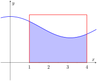(a)
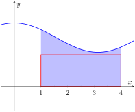(b)
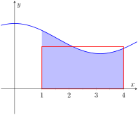(c)
Figure5.4.21.Differently sized rectangles give upper and lower bounds on \(\int_1^4 f(x)\, dx\text{;}\) the last rectangle matches the area exactly
We state this idea formally in a theorem.
Theorem5.4.22.The Mean Value Theorem of Integration.
Let \(f\) be continuous on \([a,b]\text{.}\) There exists a value \(c\) in \([a,b]\) such that
This is an existential statement; \(c\) exists, but we do not provide a method of finding it. Theorem 5.4.22 is directly connected to the Mean Value Theorem of Differentiation, given as Theorem 3.2.3; we leave it to the reader to see how.
We demonstrate the principles involved in this version of the Mean Value Theorem in the following example.
Example5.4.23.Using the Mean Value Theorem.
Consider \(\int_0^\pi \sin(x) \, dx\text{.}\) Find a value \(c\) guaranteed by the Mean Value Theorem.
Figure5.4.24.A graph of \(y=\sin(x)\) on \([0,\pi]\) and the rectangle guaranteed by the Mean Value Theorem
In Figure 5.4.24\(\sin(x)\) is sketched along with a rectangle with height \(\sin(0.69)\text{.}\) The area of the rectangle is the same as the area under \(\sin(x)\) on \([0,\pi]\text{.}\)
We now turn our attention to a related topic —average value. Let \(f\) be a function on \([a,b]\) with \(c\) such that \(f(c)(b-a) = \int_a^bf(x)\, dx\text{.}\) Consider \(\int_a^b\big(f(x)-f(c)\big)\, dx\text{:}\)
When \(f(x)\) is shifted by \(-f(c)\text{,}\) the amount of area under \(f\) above the \(x\)-axis on \([a,b]\) is the same as the amount of area below the \(x\)-axis above \(f\text{;}\) see Figure 5.4.25 for an illustration of this. In this sense, we can say that \(f(c)\) is the average value of \(f\) on \([a,b]\text{.}\)
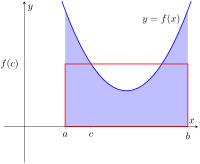
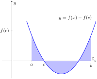
Figure5.4.25.On the left, a graph of \(y=f(x)\) and the rectangle guaranteed by the Mean Value Theorem. On the right, \(y=f(x)\) is shifted down by \(f(c)\text{;}\) the resulting “area under the curve” is 0
The value \(f(c)\) is the average value in another sense. First, recognize that the Mean Value Theorem can be rewritten as
for some value of \(c\) in \([a,b]\text{.}\) Replacing the integral with the limit of a Riemann sum (as in Theorem 5.3.21):
\begin{align*}
f(c) \amp = \frac{1}{b-a}\int_a^b f(x)\, dx \amp\\
\amp = \frac{1}{b-a} \lim\limits_{n \to \infty}\sum_{i=1}^n f(c_i)\,\Delta x \amp \text{Using } \knowl{./knowl/thm_riemann_sum.html}{\text{Theorem 5.3.21}}\\
\amp =\frac{1}{b-a} \lim\limits_{n \to \infty}\sum_{i=1}^n f(c_i)\,\frac{b-a}{n}\amp \Delta x =\frac{b-a}{n}\\
\amp =\lim\limits_{n \to \infty}\sum_{i=1}^n f(c_i)\frac{1}{n} \amp \text{Cancelling the common factor of } b-a\text{.}
\end{align*}
Examining this last line closely, the expression \(\sum_{i=1}^n f(c_i)\frac{1}{n}\) represents adding up \(n\) sample values of \(f(x)\)and then dividing by \(n\text{.}\) This is exactly what we do when we calculate the average of a set of \(n\) numbers. Now when we consider taking the limit as \(n\) goes to \(\infty\text{,}\)\(\lim\limits_{n \to \infty}\sum_{i=1}^n f(c_i)\frac{1}{n}\text{,}\) we are adding up all of the function's output values over \([a,b]\) and dividing by the “number of numbers”. In a sense, we are adding up an infinite number of output values and then dividing by the number of terms we summed (which is again infinite).
This leads us to a definition.
Definition5.4.26.The Average Value of \(f\) on \([a,b]\).
Let \(f\) be continuous on \([a,b]\text{.}\) The average value of \(f\) on \([a,b]\) is \(f(c)\text{,}\) where \(c\) is a value in \([a,b]\) guaranteed by the Mean Value Theorem. i.e.,
\begin{equation*}
\text{ Average Value of \(f\) on \([a,b]\) } = \frac{1}{b-a}\int_a^b f(x)\, dx\text{.}
\end{equation*}
An application of this definition is given in the following example.
Example5.4.27.Finding the average value of a function.
An object moves back and forth along a straight line with a velocity given by \(v(t) = (t-1)^2\) on \([0,3]\text{,}\) where \(t\) is measured in seconds and \(v(t)\) is measured in ft/s.
We can understand the above example through a simpler situation. Suppose you drove 100 miles in 2 hours. What was your average speed? The answer is simple: displacement/time = 100 miles/2 hours = 50 mph.
What was the displacement of the object in Example 5.4.27? We calculate this by integrating its velocity function: \(\int_0^3 (t-1)^2\, dt = 3\) ft. Its final position was 3 feet from its initial position after 3 seconds: its average velocity was 1 ft/s.
This section has laid the groundwork for a lot of great mathematics to follow. The most important lesson is this: definite integrals can be evaluated using antiderivatives. Since Section 5.3 established that definite integrals are the limit of Riemann sums, we can later create Riemann sums to approximate values other than “area under the curve,” convert the sums to definite integrals, then evaluate these using the Theorem 5.4.8. This will allow us to compute the work done by a variable force, the volume of certain solids, the arc length of curves, and more.
The downside is this: generally speaking, computing antiderivatives is much more difficult than computing derivatives. Chapter 6 is devoted to techniques of finding antiderivatives so that a wide variety of definite integrals can be evaluated. Before that, Section 5.5 explores techniques of approximating the value of definite integrals beyond using the Left Hand, Right Hand and Midpoint Rules. These techniques are invaluable when antiderivatives cannot be computed, or when the actual function \(f\) is unknown and all we know is the value of \(f\) at certain \(x\)-values.
Exercises5.4.6Exercises
Terms and Concepts
1.
How are definite and indefinite integrals related?
2.
What constant of integration is most commonly used when evaluating definite integrals?
3.
True
False
If \(f\) is a continuous function, then \(\ds F(x) = \int_a^x f(t)\, dt\) is also a continuous function.
4.
The definite integral can be used to find “the area under a curve.” Give two other uses for definite integrals.